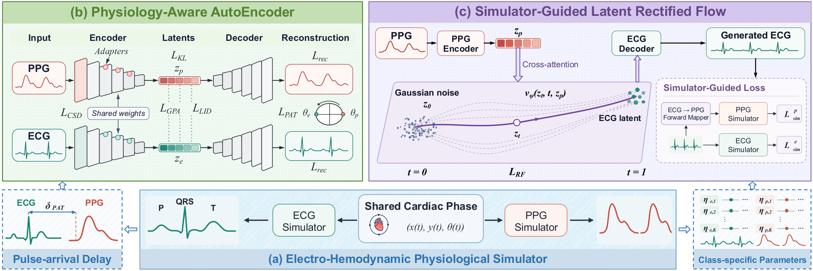

Electro-Hemodynamic Physiological Simulator
A shared cardiac phase drives an ECG simulator and a PPG simulator, so the two modalities are linked through the pulse-arrival delay, with class-specific parameters fitted per ICD-stratified group.
Physiology-Guided Latent Rectified Flow for Electro-Hemodynamic PPG-to-ECG Generation
1Department of Computer Science, Emory University · 2Nell Hodgson Woodruff School of Nursing, Emory University · 3Department of Computer Science, UCLA · 4Department of Computer Science, USC · 5Department of Statistics, University of Wisconsin–Madison
Live illustration. Both traces are driven by one shared cardiac phase from the electro-hemodynamic simulator described below; they are not recorded patient data.
The clinical standard for cardiac assessment, but it needs dedicated hardware that does not scale to daily-life monitoring.
Ubiquitous in wearables, yet it lacks ECG-specific diagnostic morphology and is corrupted by motion and sensor noise.
PPG2ECG recovers electrical morphology and timing from the peripheral pulse, with physiology as the guide rather than data alone.
An electro-hemodynamic simulator co-models ECG and PPG through shared cardiac phase dynamics. It shapes the latent space of a Physiology-Aware AutoEncoder, then regularizes a PPG-conditioned latent rectified flow that generates the ECG.

A shared cardiac phase drives an ECG simulator and a PPG simulator, so the two modalities are linked through the pulse-arrival delay, with class-specific parameters fitted per ICD-stratified group.
Dual PPG and ECG paths with shared blocks and modality adapters learn an aligned electro-hemodynamic latent space at each signal's native rate (40 Hz PPG, 120 Hz ECG).
A PPG-conditioned vector field transports Gaussian noise to ECG latents. Simulator losses enforce ECG-side morphology consistency and ECG-to-PPG forward hemodynamic consistency during training only; inference needs just the PPG.
The PPG pulse arrives one pulse-arrival delay (δPAT) after each R peak. Heart rate drifts slowly to show the phase coupling.
Held-out 10-second MC-MED windows from different patients. Pick a model to overlay its generated ECG on the reference. Every trace below is taken directly from the paper figure.
Each signal is z-scored within its window and plotted on a common scale in the dataset's QRS-upright orientation, without smoothing, time shifts, or rescaling. PPG2ECG follows the reference beat timing and waveform shape in all three windows (r = 0.84, 0.90, 0.93); the four baselines generate recognizable beats, but their peaks often miss the reference peaks (r ≤ 0.21 in these windows).
118,385 emergency-department visits from 70,545 patients at Stanford Health Care, with synchronized PPG and lead II ECG. Mean ± standard deviation over three runs; lower is better unless marked ↑.
| Method | MAE ↓ | RMSE ↓ | FD ↓ | FID ↓ | HR MAE ↓ | Pearson r ↑ | R-peak F1 ↑ |
|---|---|---|---|---|---|---|---|
| RDDM | 0.95 ± 0.01 | 1.41 ± 0.01 | 60.34 ± 0.47 | 47.97 ± 0.12 | 5.48 ± 0.08 | 0.0074 ± 0.0006 | 0.26 ± 0.01 |
| CardioGAN | 1.07 ± 0.01 | 1.46 ± 0.01 | 74.17 ± 0.22 | 47.01 ± 0.01 | 4.71 ± 0.01 | −0.0040 ± 0.0007 | 0.06 ± 0.01 |
| CardioFlow | 0.94 ± 0.01 | 1.35 ± 0.01 | 58.78 ± 0.65 | 86.77 ± 0.22 | 6.83 ± 0.74 | 0.0277 ± 0.0004 | 0.28 ± 0.01 |
| PPGFlowECG | 0.87 ± 0.04 | 1.32 ± 0.04 | 46.64 ± 1.49 | 44.17 ± 0.11 | 7.08 ± 0.10 | 0.0051 ± 0.0004 | 0.15 ± 0.01 |
| PPG2ECG | 0.71 ± 0.04 | 1.07 ± 0.05 | 39.68 ± 1.96 | 37.79 ± 0.27 | 3.94 ± 0.76 | 0.1906 ± 0.0005 | 0.74 ± 0.01 |
| w/o Sim | 0.84 ± 0.01 | 1.28 ± 0.01 | 40.51 ± 1.20 | 45.90 ± 0.27 | 4.94 ± 0.57 | 0.1212 ± 0.0018 | 0.62 ± 0.01 |
| w/o PAE | 0.85 ± 0.05 | 1.26 ± 0.01 | 43.10 ± 0.88 | 44.07 ± 0.37 | 6.36 ± 0.07 | 0.1471 ± 0.0022 | 0.71 ± 0.01 |
HR MAE in bpm. Removing simulator guidance (w/o Sim) or the physiology-aware autoencoder (w/o PAE) degrades waveform error, FID, and heart-rate consistency. External validation on three additional datasets and the cardiovascular disease classification results are in the paper.
@inproceedings{wang2026ppg2ecg,
title={PPG2ECG: Physiology-Guided Latent Rectified Flow for Electro-Hemodynamic PPG-to-ECG Generation},
author={Wang, Xiaoda and Wang, Minxiao and Han, Kaiqiao and Cao, Defu and Chang, Ching and Shi, Yidan and Yan, Runze and Luo, Xiao and Liu, Yan and Hu, Xiao and Sun, Yizhou and Wang, Wei and Yang, Carl},
booktitle={The Fortieth Annual Conference on Neural Information Processing Systems},
year={2026}
}
The arXiv preprint (arXiv:2605.12541) appeared under the method's earlier name, PG-LRF.
Pretrained model parameters are shared on request. Please email xiaoda.wang@emory.edu and briefly describe your intended use.
Repository on GitHub →